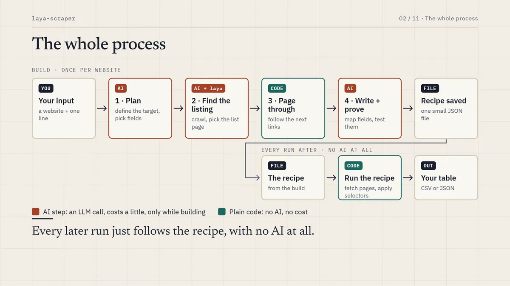
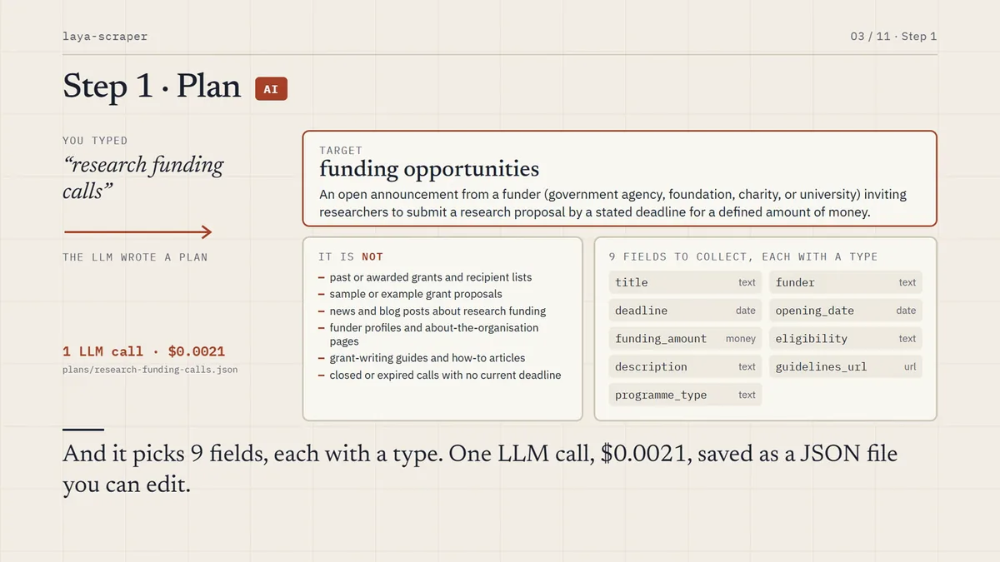
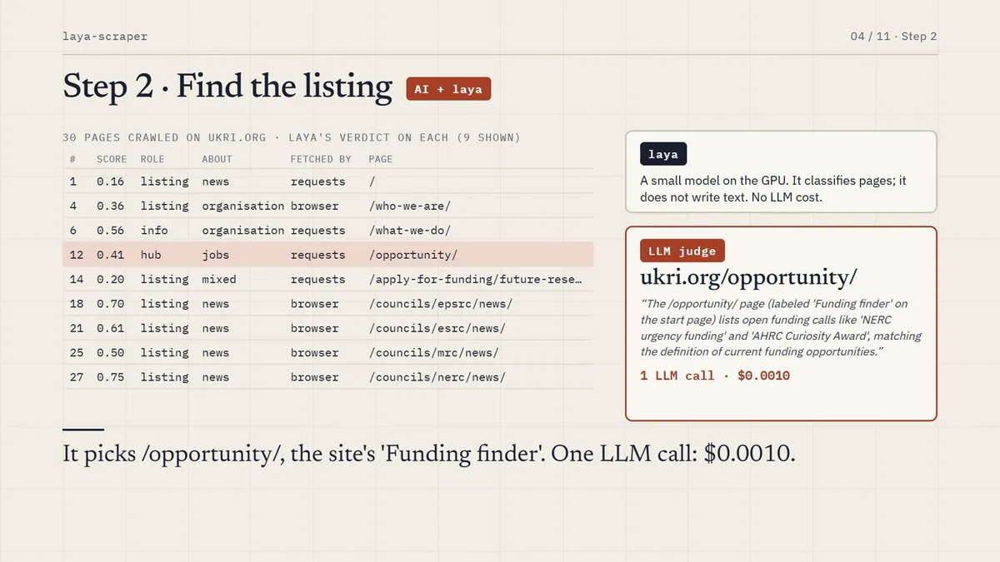
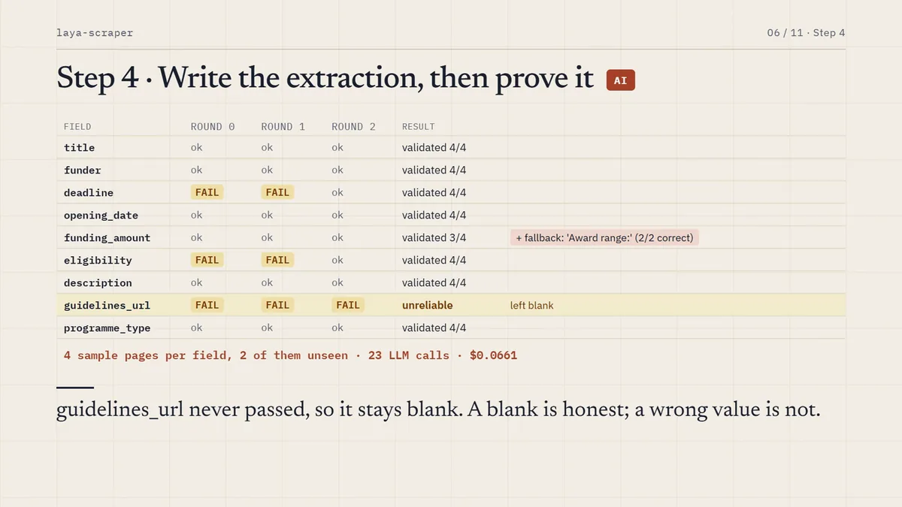
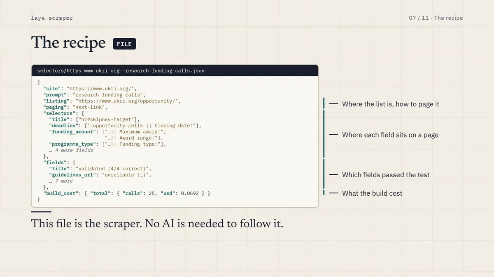
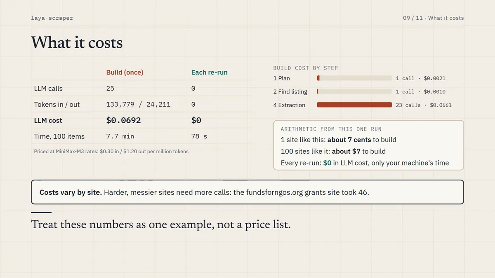
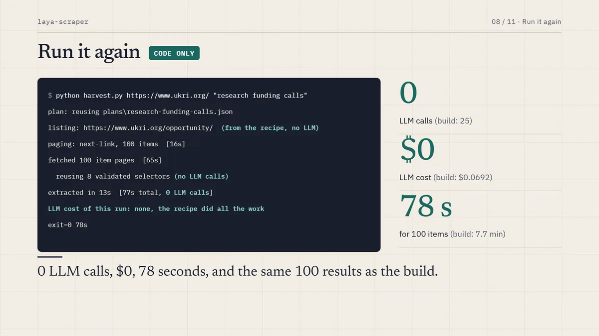
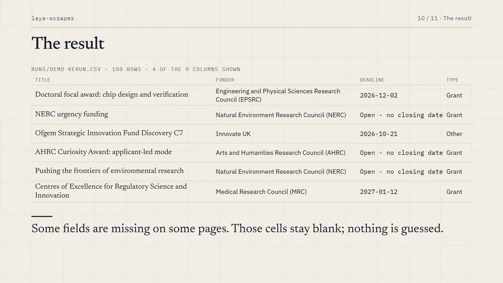

An AI writes the scraper once. Plain code runs it after that.
Give it a website and one line of plain English: "grants", "patents", "datasets", "policy papers". It finds the listing, pages through it, designs a schema and extracts every item into a table. The AI is used only to write a small recipe for that site. Every run after is plain code: no AI, no cost, the same answers each time.
Measured on ukri.org with the prompt "research funding calls", priced with MiniMax-M3 at $0.30 in and $1.20 out per million tokens. Messier sites take more calls.
Watch one real run, start to finish
Six narrated minutes: the prompt becomes a plan, the crawler finds the listing, selectors are graded and repaired, and the same recipe runs again with no AI at all.
720p, 8 MB, 6 min 24 s. There is also a 1080p version at 42 MB.
The AI writes the scraper. Plain code runs it.
The LLM never scrapes anything. On the first run it writes a recipe: a small JSON file holding the listing URL, how to page through it, and one proven selector per field. Every later run follows that recipe.

An LLM makes a handful of decisions
It turns your prompt into a plan and a field schema, picks the real listing among the crawler's candidates, maps each field to a page element, and grades its own choices. MiniMax by default, or any OpenAI or Anthropic compatible endpoint, including a local model.
A small non-generative decision model on the GPU: is this page about the target, is it a list or a single item, and how confident is each extracted value. Hundreds of questions per run, answered in one batched pass. It also runs on CPU, more slowly.
Plain code does the rest
Pagination, page decomposition and CSS selection. Four paging strategies are tried in order: a next link, a load-more button or infinite scroll, a "view all" landing page, then probing ?page= style URLs. Nothing is hard-coded per site.
Plan. One LLM call turns the prompt into a target, the names sites use for such a listing, and five to nine typed fields. It is plain JSON: edit it and the next run uses your schema.
Locate. The crawler proposes candidates and the LLM picks the real listing. A complete listing beats a sub-collection.
Paginate. Up to the item limit you set, using whichever paging strategy the site actually has.
Extract. Each page is decomposed into metadata and labelled facts, fields are mapped to elements, then every selector is graded on four sample pages and repaired until it is right.
Remember. The recipe is saved per site and prompt. Repeat runs make no LLM calls. After a redesign, --revalidate re-grades the saved selectors and repairs only what broke.

The prompt becomes a definition, what the target is not, and typed fields.

The crawler and laya judge pages; the LLM picks the real listing.

Every selector is graded on sample pages and repaired before it is trusted.

The recipe: this JSON file is the scraper.
What it costs, measured
This run was built from nothing on ukri.org. Every run prints its own cost by stage, and the build cost is stored in the recipe.
Cost of building a scraper compared with running it again
Run
LLM calls
Tokens in / out
LLM cost
Time, 100 items
Build, the first run
25
133,779 / 24,211
$0.069
7.7 min
plan, one call: $0.002 · locate, one call: $0.001 · extract, map, validate and repair, 23 calls: $0.066
Every run after, on fresh pages
0
0
$0
78 s
LLM cost of this run: plan 1 calls $0.0021, locate 1 calls $0.0010,
extract 23 calls $0.0661, total 25 calls $0.0692
LLM cost of this run: none, the recipe did all the work
Build costs vary by site. A clean site costs a few cents; a free-form blog of grants needed 46 calls, because values buried in prose need text patterns and more repair rounds. As rough arithmetic, a hundred sites like UKRI would cost about $7 to build, and nothing to run. Set LLM_PRICE_IN and LLM_PRICE_OUT to your model's prices, or to zero for a local one.

Five targets, five sites, 100 items each
Quality here is an LLM check of ten random items per site against the page. That is a consistent proxy, not a hand-labelled ground truth.
Listing found, paging strategy, precision and recall per site
Target
Site
Listing found
Paging
Precision
Recall
patents
patents.justia.com
/company/linkedin
next-link
100%
94%
funding opportunities
ukri.org
/opportunity/
next-link
97%
91%
publications
odi.org
/en/publications/
next-link
96%
90%
policy papers
gov.uk
/search/policy-papers
probe ?page=
100%
77%
datasets
catalog.data.gov
the homepage
load-more
96%
70%
Precision is how often a filled value is right. Recall is how many of the values shown on the page were filled. The lower recall on gov.uk and data.gov is fields left deliberately blank and marked unreliable, not wrong values: a blank is honest, a wrong value is not.

The same recipe on fresh pages: zero LLM calls.

The five targets, each with 100 items collected.
Run it yourself
Python 3.10 or newer and Node 18 or newer. An NVIDIA GPU is recommended; CPU works, more slowly. The first run downloads the laya checkpoint.
git clone https://github.com/qxZap/laya-scraper && cd laya-scraper
python -m venv .venv && .venv/Scripts/python -m pip install -r requirements.txt && npm install
cp .env.example .env # an OpenAI or Anthropic compatible key, or a local model
.venv/Scripts/python harvest.py https://www.ukri.org/ "research funding calls" --out calls.csv
On macOS or Linux use .venv/bin/python. The LLM is needed only while a recipe is being built or re-validated, so point it at Ollama, LM Studio or vLLM and the whole thing runs on your own machine.
python harvest.py https://catalog.data.gov/ "datasets" --out datasets.json
python harvest.py https://odi.org/en/ "publications" --revalidate # after a redesign
python scrape.py https://odi.org/en/ # just find the listing
What it does not do
Weights are hand-tuned on three sites. With twenty to fifty labelled sites they could be fitted properly.
Some labels are noisy. The page kind is zero-shot, so an experts page can come out as "news". A confidence score is reported with each one.
Lists fed by a cursor-based API, with no page URLs or buttons, are out of reach. Reading the JSON API directly is the next step.
Recipes go stale when a site is redesigned. Re-run with --revalidate; it repairs only what broke.
Some fields stay blank when they vary too much across a site's pages to validate. They are marked unreliable rather than guessed.
Terms of service. robots.txt is respected and requests are throttled per host, but getting past a bot wall can still conflict with a site's terms. Check before crawling sites you do not own.
Point it at a site and see
The repo has the five example runs, their logs and the recipes they produced. If it fails on a site, an issue with the site, the prompt and the log is the most useful thing you can send.